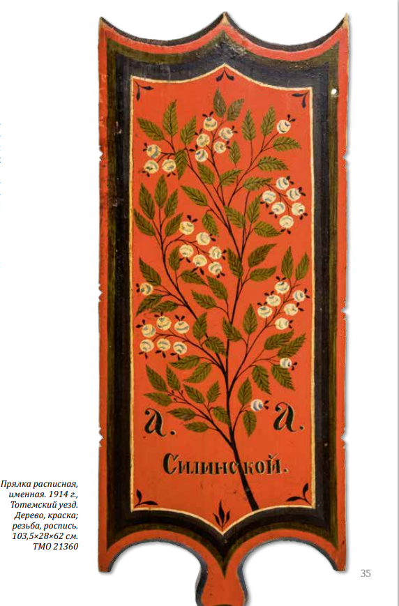

Если резьба развивалась в основном в среде домашнего крестьянства, то росписи по дереву формировались в промыслы. В Тотемском уезде свободно-кистевой росписью славились Матвеевская и Мосеевская волости. Изделия расходились в ближайших селениях и продавались на ярмарках и базарах по всему краю. Владели этим мастерством люди избранные, они ходили по деревням и предлагали свои услуги по росписи домов их владельцам. Соглашались далеко не все, ведь это была не дешевая услуга, краски стоили дорого и расплачиваться с мастерами приходилось большой монетой.
В росписи обычно использовали красную, синюю, бордовую, желтую, зеленую и белую краски, на искусно подобранных цветных фонах они казались еще ярче и звучнее. Часто мастера применяли белильные оживки – белые блики, которые помогали подчеркнуть форму изображения.

Мотивы росписи зачастую были связаны с миром природы: это деревья, цветы, иногда в композицию включали животных или птиц. Орнамент, как правило, исполнялся на плоскости, композиция рисунка – очень свободная. Иногда мастера завершали роспись не кистью, а пальцем, что придавало еще большую непосредственность и без того свободной манере письма.